To filter paste in here:
aawiki abwikiacewikiadvisorswiki
abwikiacewikiadvisorswiki
 adywikiafwikiafwikibooks
adywikiafwikiafwikibooks
 afwikiquoteafwiktionary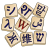akwiki
afwikiquoteafwiktionary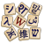akwiki alswikialtwiki
alswikialtwiki amiwikiamwiki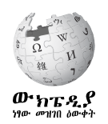amwikimedia
amiwikiamwiki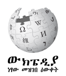amwikimedia amwiktionary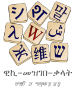angwikiangwiktionary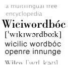anwikianwiktionaryarbcom_cswiki
amwiktionary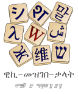angwikiangwiktionary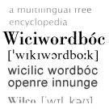anwikianwiktionaryarbcom_cswiki arbcom_dewiki
arbcom_dewiki arbcom_enwiki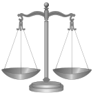
arbcom_enwiki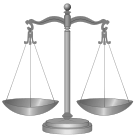 arbcom_fiwikiarbcom_nlwiki
arbcom_fiwikiarbcom_nlwiki arbcom_ruwiki
arbcom_ruwiki arcwikiarwikiarwikibooksarwikimedia
arcwikiarwikiarwikibooksarwikimedia arwikinews
arwikinews arwikiquotearwikisource
arwikiquotearwikisource arwikiversity
arwikiversity arwiktionaryarywikiarzwikiastwikiastwiktionaryaswikiaswikisource
arwiktionaryarywikiarzwikiastwikiastwiktionaryaswikiaswikisource atjwiki
atjwiki auditcomwiki
auditcomwiki
 avkwikiavwikiawawiki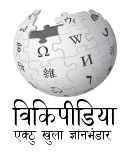aywikiaywiktionaryazbwikiazwikiazwikibooksazwikiquoteazwikisource
avkwikiavwikiawawiki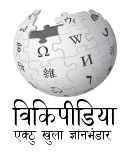aywikiaywiktionaryazbwikiazwikiazwikibooksazwikiquoteazwikisource
 azwiktionary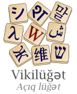banwikibanwikisource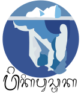
azwiktionary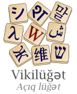banwikibanwikisource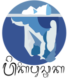 barwikibat_smgwiki
barwikibat_smgwiki bawikibawikibooksbclwikibclwikiquotebclwiktionary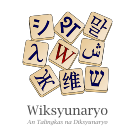bdwikimedia
bawikibawikibooksbclwikibclwikiquotebclwiktionary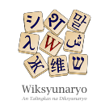bdwikimedia be_x_oldwikibetawikiversity
be_x_oldwikibetawikiversity bewiki
bewiki bewikibooksbewikimedia
bewikibooksbewikimedia bewikiquotebewikisource
bewikiquotebewikisource bewiktionary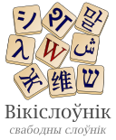bgwikibgwikibooksbgwikinews
bewiktionary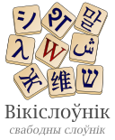bgwikibgwikibooksbgwikinews bgwikiquotebgwikisource
bgwikiquotebgwikisource bgwiktionarybhwikibiwikibjnwikibjnwiktionaryblkwikibmwikibnwiki
bgwiktionarybhwikibiwikibjnwikibjnwiktionaryblkwikibmwikibnwiki bnwikibooksbnwikiquotebnwikisource
bnwikibooksbnwikiquotebnwikisource bnwikivoyage
bnwikivoyage
 bnwiktionaryboardgovcomwiki
bnwiktionaryboardgovcomwiki
 boardwiki
boardwiki bowikibpywikibrwiki
bowikibpywikibrwiki brwikimediabrwikiquotebrwikisource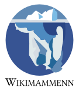
brwikimediabrwikiquotebrwikisource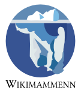 brwiktionary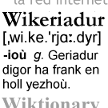bswikibswikibooks
brwiktionary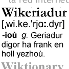bswikibswikibooks bswikinews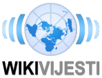
bswikinews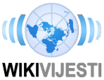 bswikiquotebswikisource
bswikiquotebswikisource bswiktionarybugwikibxrwikicawikicawikibookscawikimedia
bswiktionarybugwikibxrwikicawikicawikibookscawikimedia cawikinews
cawikinews cawikiquotecawikisource
cawikiquotecawikisource cawiktionarycbk_zamwikicdowikicebwikicewikichairwiki
cawiktionarycbk_zamwikicdowikicebwikicewikichairwiki
 chapcomwiki
chapcomwiki checkuserwiki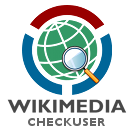
checkuserwiki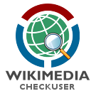 chrwiki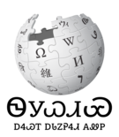chrwiktionarychwikichywikickbwikicnwikimedia
chrwiki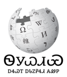chrwiktionarychwikichywikickbwikicnwikimedia collabwiki
collabwiki commonswikicowikicowikimedia
commonswikicowikicowikimedia cowiktionary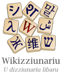crhwikicrwiki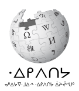csbwikicsbwiktionary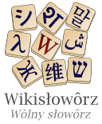cswiki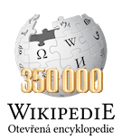cswikibookscswikinews
cowiktionary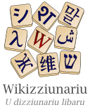crhwikicrwiki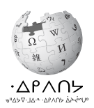csbwikicsbwiktionary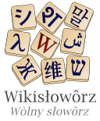cswiki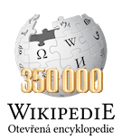cswikibookscswikinews cswikiquotecswikisource
cswikiquotecswikisource cswikiversity
cswikiversity cswiktionarycuwiki
cswiktionarycuwiki cvwikicvwikibookscywikicywikibookscywikiquotecywikisource
cvwikicvwikibookscywikicywikibookscywikiquotecywikisource cywiktionary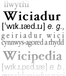dagwikidawikidawikibooksdawikiquotedawikisource
cywiktionary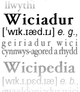dagwikidawikidawikibooksdawikiquotedawikisource dawiktionary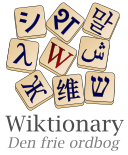dewiki
dawiktionary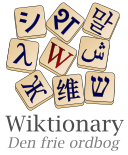dewiki dewikibooksdewikinews
dewikibooksdewikinews
 dewikiquotedewikisource
dewikiquotedewikisource
 dewikiversity
dewikiversity dewikivoyage
dewikivoyage dewiktionarydinwikidiqwikidiqwiktionarydkwikimedia
dewiktionarydinwikidiqwikidiqwiktionarydkwikimedia
 donatewiki
donatewiki
 dsbwikidtywikidvwikidvwiktionarydzwiki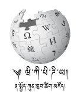ecwikimedia
dsbwikidtywikidvwikidvwiktionarydzwiki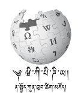ecwikimedia eewikielectcomwiki
eewikielectcomwiki
 elwikielwikibookselwikinews
elwikielwikibookselwikinews elwikiquoteelwikisource
elwikiquoteelwikisource elwikiversity
elwikiversity elwikivoyageelwiktionary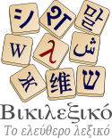emlwikienwikienwikibooksenwikinews
elwikivoyageelwiktionary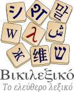emlwikienwikienwikibooksenwikinews enwikiquoteenwikisource
enwikiquoteenwikisource enwikiversity
enwikiversity enwikivoyage
enwikivoyage enwiktionary
enwiktionary eowikieowikibookseowikinews
eowikieowikibookseowikinews eowikiquote
eowikiquote eowikisource
eowikisource eowikivoyageeowiktionary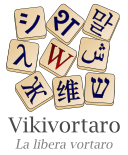eswikieswikibookseswikinews
eowikivoyageeowiktionary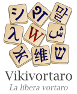eswikieswikibookseswikinews eswikiquoteeswikisource
eswikiquoteeswikisource eswikiversity
eswikiversity eswikivoyageeswiktionary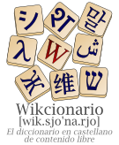etwikietwikibooksetwikimedia
eswikivoyageeswiktionary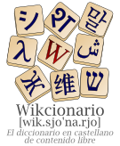etwikietwikibooksetwikimedia etwikiquote
etwikiquote etwikisource
etwikisource etwiktionaryeuwikieuwikibookseuwikiquote
etwiktionaryeuwikieuwikibookseuwikiquote euwikisource
euwikisource euwiktionary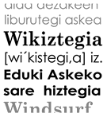execwiki
euwiktionary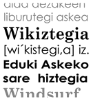execwiki extwikifawikifawikibooks
extwikifawikifawikibooks fawikinews
fawikinews fawikiquotefawikisource
fawikiquotefawikisource fawikivoyage
fawikivoyage fawiktionary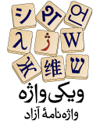
fawiktionary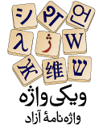 fdcwiki
fdcwiki ffwikifiu_vrowikifiwikifiwikibooks
ffwikifiu_vrowikifiwikifiwikibooks fiwikimedia
fiwikimedia fiwikinews
fiwikinews fiwikiquotefiwikisource
fiwikiquotefiwikisource fiwikiversity
fiwikiversity fiwikivoyagefiwiktionaryfjwiki
fiwikivoyagefiwiktionaryfjwiki fjwiktionaryfoundationwiki
fjwiktionaryfoundationwiki fowikifowikisource
fowikifowikisource fowiktionary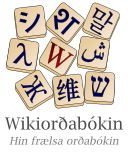frpwiki
fowiktionary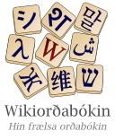frpwiki frrwikifrwikifrwikibooksfrwikinews
frrwikifrwikifrwikibooksfrwikinews
 frwikiquotefrwikisource
frwikiquotefrwikisource frwikiversity
frwikiversity frwikivoyagefrwiktionaryfurwikifywikifywikibooksfywiktionary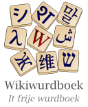gagwikiganwikigawiki
frwikivoyagefrwiktionaryfurwikifywikifywikibooksfywiktionary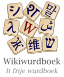gagwikiganwikigawiki gawiktionarygcrwikigdwikigdwiktionarygewikimedia
gawiktionarygcrwikigdwikigdwiktionarygewikimedia glkwikiglwikiglwikibooksglwikiquoteglwikisource
glkwikiglwikiglwikibooksglwikiquoteglwikisource glwiktionarygnwikignwiktionarygomwikigomwiktionary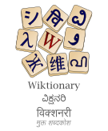gorwikigotwikigrantswiki
glwiktionarygnwikignwiktionarygomwikigomwiktionary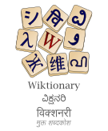gorwikigotwikigrantswiki grwikimedia
grwikimedia guwikiguwikiquoteguwikisource
guwikiguwikiquoteguwikisource guwiktionary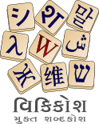guwwikiguwwiktionarygvwikigvwiktionaryhakwiki
guwiktionary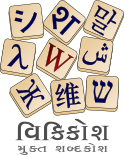guwwikiguwwiktionarygvwikigvwiktionaryhakwiki hawikihawiktionaryhawwikihewiki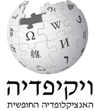hewikibookshewikinews
hawikihawiktionaryhawwikihewiki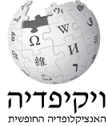hewikibookshewikinews hewikiquotehewikisource
hewikiquotehewikisource hewikivoyagehewiktionary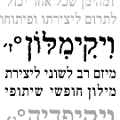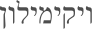hifwikihifwiktionaryhiwikihiwikibookshiwikimedia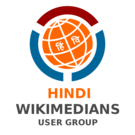
hewikivoyagehewiktionary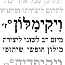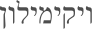hifwikihifwiktionaryhiwikihiwikibookshiwikimedia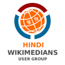 hiwikiquotehiwikisource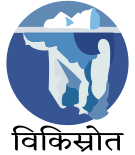
hiwikiquotehiwikisource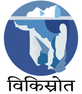 hiwikiversity
hiwikiversity hiwikivoyagehiwiktionary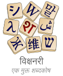hrwikihrwikibookshrwikiquote
hiwikivoyagehiwiktionary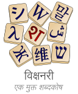hrwikihrwikibookshrwikiquote hrwikisource
hrwikisource hrwiktionaryhsbwikihsbwiktionary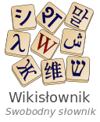htwikihuwikihuwikibookshuwikiquotehuwikisource
hrwiktionaryhsbwikihsbwiktionary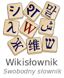htwikihuwikihuwikibookshuwikiquotehuwikisource huwiktionaryhywikihywikibookshywikiquote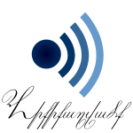hywikisource
huwiktionaryhywikihywikibookshywikiquote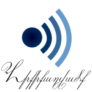hywikisource hywiktionaryhywwikiiawikiiawikibooksiawiktionaryid_internalwikimedia
hywiktionaryhywwikiiawikiiawikibooksiawiktionaryid_internalwikimedia idwikiidwikibooksidwikimedia
idwikiidwikibooksidwikimedia idwikiquoteidwikisource
idwikiquoteidwikisource idwiktionary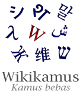iegcomwiki
idwiktionary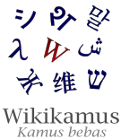iegcomwiki iewikiiewiktionary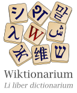igwikiigwikiquoteigwiktionaryikwikiilowikiilwikimedia
iewikiiewiktionary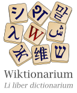igwikiigwikiquoteigwiktionaryikwikiilowikiilwikimedia incubatorwiki
incubatorwiki
 inhwikiinternalwiki
inhwikiinternalwiki iowikiiowiktionaryiswikiiswikibooksiswikiquoteiswikisource
iowikiiowiktionaryiswikiiswikibooksiswikiquoteiswikisource iswiktionary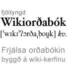itwikiitwikibooksitwikinews
iswiktionary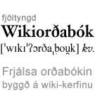itwikiitwikibooksitwikinews itwikiquoteitwikisource
itwikiquoteitwikisource itwikiversity
itwikiversity itwikivoyageitwiktionaryiuwikiiuwiktionaryjamwikijawiki
itwikivoyageitwiktionaryiuwikiiuwiktionaryjamwikijawiki jawikibooksjawikinews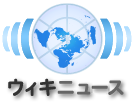
jawikibooksjawikinews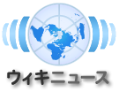 jawikiquotejawikisource
jawikiquotejawikisource jawikiversity
jawikiversity jawikivoyagejawiktionaryjbowiki
jawikivoyagejawiktionaryjbowiki jbowiktionary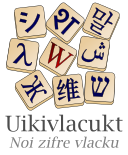jvwikijvwikisourcejvwiktionary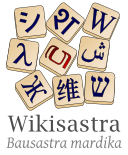kaawikikabwikikawikikawikibookskawikiquote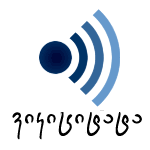kawiktionary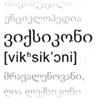kbdwiki
jbowiktionary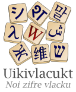jvwikijvwikisourcejvwiktionary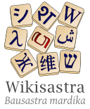kaawikikabwikikawikikawikibookskawikiquote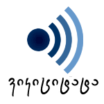kawiktionary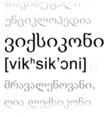kbdwiki kbpwikikcgwiki
kbpwikikcgwiki kgwiki
kgwiki kiwikikkwikikkwikibookskkwiktionary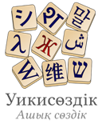klwikiklwiktionarykmwikikmwikibookskmwiktionary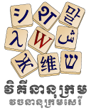knwikiknwikiquoteknwikisource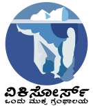
kiwikikkwikikkwikibookskkwiktionary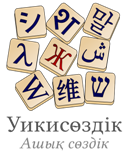klwikiklwiktionarykmwikikmwikibookskmwiktionary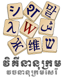knwikiknwikiquoteknwikisource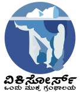 knwiktionarykoiwikikowikikowikibooks
knwiktionarykoiwikikowikikowikibooks kowikinews
kowikinews kowikiquotekowikisource
kowikiquotekowikisource kowikiversity
kowikiversity kowiktionarykrcwikikshwiki
kowiktionarykrcwikikshwiki kswikikswiktionarykuwikikuwikibookskuwikiquotekuwiktionarykvwikikwwikikwwiktionarykywikikywikibookskywikiquotekywiktionarylabswiki
kswikikswiktionarykuwikikuwikibookskuwikiquotekuwiktionarykvwikikwwikikwwiktionarykywikikywikibookskywikiquotekywiktionarylabswiki ladwikilawikilawikibooks
ladwikilawikilawikibooks lawikiquotelawikisource
lawikiquotelawikisource lawiktionarylbewikilbwikilbwiktionarylegalteamwiki
lawiktionarylbewikilbwikilbwiktionarylegalteamwiki lezwikilfnwikilgwikilijwikilijwikisource
lezwikilfnwikilgwikilijwikilijwikisource liwikiliwikibooksliwikinews
liwikiliwikibooksliwikinews liwikiquoteliwikisource
liwikiquoteliwikisource liwiktionarylldwikilmowikilmowiktionarylnwikilnwiktionaryloginwiki
liwiktionarylldwikilmowikilmowiktionarylnwikilnwiktionaryloginwiki lowikilowiktionarylrcwikiltgwikiltwikiltwikibooksltwikiquoteltwikisource
lowikilowiktionarylrcwikiltgwikiltwikiltwikibooksltwikiquoteltwikisource ltwiktionarylvwikilvwiktionarymadwikimaiwikimaiwikimedia
ltwiktionarylvwikilvwiktionarymadwikimaiwikimaiwikimedia map_bmswikimdfwikimetawikimgwikimgwikibooks
map_bmswikimdfwikimetawikimgwikimgwikibooks mgwiktionary
mgwiktionary mhrwiki
mhrwiki minwikiminwiktionarymiwiki
minwikiminwiktionarymiwiki miwiktionarymkwiki
miwiktionarymkwiki mkwikibooksmkwikimedia
mkwikibooksmkwikimedia mkwikisource
mkwikisource
 mkwiktionarymlwikimlwikibooksmlwikiquotemlwikisource
mkwiktionarymlwikimlwikibooksmlwikiquotemlwikisource mlwiktionarymniwikimniwiktionarymnwikimnwiktionarymnwwikimnwwiktionary
mlwiktionarymniwikimniwiktionarymnwikimnwiktionarymnwwikimnwwiktionary movementroleswiki
movementroleswiki
 mrjwikimrwikimrwikibooksmrwikiquotemrwikisource
mrjwikimrwikimrwikibooksmrwikiquotemrwikisource mrwiktionarymswikimswikibooksmswiktionarymtwikimtwiktionarymwlwikimxwikimedia
mrwiktionarymswikimswikibooksmswiktionarymtwikimtwiktionarymwlwikimxwikimedia myvwikimywikimywiktionarymznwikinahwiki
myvwikimywikimywiktionarymznwikinahwiki nahwiktionarynapwiki
nahwiktionarynapwiki napwikisource
napwikisource nawiki
nawiki nawiktionarynds_nlwikindswikindswiktionary
nawiktionarynds_nlwikindswikindswiktionary newikinewikibooksnewiktionarynewwiki
newikinewikibooksnewiktionarynewwiki ngwikimedia
ngwikimedia niawikiniawiktionarynlwikinlwikibooksnlwikimedia
niawikiniawiktionarynlwikinlwikibooksnlwikimedia nlwikinews
nlwikinews nlwikiquotenlwikisource
nlwikiquotenlwikisource nlwikivoyagenlwiktionary
nlwikivoyagenlwiktionary nnwikinnwikiquotennwiktionarynoboard_chapterswikimedia
nnwikinnwikiquotennwiktionarynoboard_chapterswikimedia nostalgiawiki
nostalgiawiki novwikinowikinowikibooksnowikimedia
novwikinowikinowikibooksnowikimedia nowikinews
nowikinews
 nowikiquotenowikisource
nowikiquotenowikisource nowiktionarynqowikinrmwikinsowikinvwikinycwikimedia
nowiktionarynqowikinrmwikinsowikinvwikinycwikimedia nywiki
nywiki ocwikiocwikibooksocwiktionaryolowikiombudsmenwiki
ocwikiocwikibooksocwiktionaryolowikiombudsmenwiki omwikiomwiktionaryorwikiorwikisource
omwikiomwiktionaryorwikiorwikisource orwiktionaryoswikiotrs_wikiwiki
orwiktionaryoswikiotrs_wikiwiki outreachwiki
outreachwiki pagwikipamwikipapwikipawikipawikibookspawikisource
pagwikipamwikipapwikipawikipawikibookspawikisource pawiktionarypcdwikipcmwikipdcwikipflwikipihwikipiwikiplwikiplwikibooksplwikimedia
pawiktionarypcdwikipcmwikipdcwikipflwikipihwikipiwikiplwikiplwikibooksplwikimedia plwikinewsplwikiquoteplwikisource
plwikinewsplwikiquoteplwikisource plwikivoyageplwiktionarypmswikipmswikisource
plwikivoyageplwiktionarypmswikipmswikisource pnbwiki
pnbwiki pnbwiktionarypntwikiprojectcomwiki
pnbwiktionarypntwikiprojectcomwiki
 pswikipswikivoyagepswiktionaryptwikiptwikibooksptwikimedia
pswikipswikivoyagepswiktionaryptwikiptwikibooksptwikimedia ptwikinews
ptwikinews ptwikiquoteptwikisource
ptwikiquoteptwikisource ptwikiversityptwikivoyageptwiktionarypunjabiwikimedia
ptwikiversityptwikivoyageptwiktionarypunjabiwikimedia pwnwikiquwikiquwiktionaryrmwikirmywikirnwikiroa_rupwikiroa_rupwiktionaryroa_tarawikiromdwikimedia
pwnwikiquwikiquwiktionaryrmwikirmywikirnwikiroa_rupwikiroa_rupwiktionaryroa_tarawikiromdwikimedia rowikirowikibooksrowikinews
rowikirowikibooksrowikinews rowikiquoterowikisource
rowikiquoterowikisource rowikivoyagerowiktionaryrswikimedia
rowikivoyagerowiktionaryrswikimedia ruewikiruwikiruwikibooksruwikimedia
ruewikiruwikiruwikibooksruwikimedia ruwikinews
ruwikinews ruwikiquoteruwikisource
ruwikiquoteruwikisource ruwikiversity
ruwikiversity ruwikivoyage
ruwikivoyage ruwiktionary
ruwiktionary rwwiki
rwwiki rwwiktionarysahwikisahwikiquote
rwwiktionarysahwikisahwikiquote sahwikisource
sahwikisource satwikisawikisawikibookssawikiquotesawikisource
satwikisawikisawikibookssawikiquotesawikisource sawiktionaryscnwikiscnwiktionaryscowikiscwiki
sawiktionaryscnwikiscnwiktionaryscowikiscwiki sdwikisdwiktionarysearchcomwiki
sdwikisdwiktionarysearchcomwiki sewikisewikimedia
sewikisewikimedia sgwikisgwiktionaryshiwikishnwikishnwikivoyageshnwiktionaryshwikishwiktionaryshywiktionarysimplewikisimplewiktionarysiwikisiwikibookssiwiktionaryskrwiki
sgwikisgwiktionaryshiwikishnwikishnwikivoyageshnwiktionaryshwikishwiktionaryshywiktionarysimplewikisimplewiktionarysiwikisiwikibookssiwiktionaryskrwiki skrwiktionaryskwikiskwikibooksskwikiquoteskwikisource
skrwiktionaryskwikiskwikibooksskwikiquoteskwikisource skwiktionaryslwikislwikibooksslwikiquoteslwikisource
skwiktionaryslwikislwikibooksslwikiquoteslwikisource slwikiversity
slwikiversity slwiktionarysmnwikismwikismwiktionarysnwikisourceswiki
slwiktionarysmnwikismwikismwiktionarysnwikisourceswiki sowikisowiktionaryspcomwiki
sowikisowiktionaryspcomwiki specieswiki
specieswiki sqwikisqwikibookssqwikinews
sqwikisqwikibookssqwikinews sqwikiquotesqwiktionarysrnwikisrwikisrwikibookssrwikinews
sqwikiquotesqwiktionarysrnwikisrwikisrwikibookssrwikinews srwikiquotesrwikisource
srwikiquotesrwikisource srwiktionarysswiki
srwiktionarysswiki sswiktionarystewardwiki
sswiktionarystewardwiki stqwikistwikistwiktionarysuwikisuwikiquote
stqwikistwikistwiktionarysuwikisuwikiquote suwiktionarysvwikisvwikibookssvwikinews
suwiktionarysvwikisvwikibookssvwikinews svwikiquotesvwikisource
svwikiquotesvwikisource svwikiversity
svwikiversity svwikivoyagesvwiktionaryswwikiswwiktionarysysop_itwiki
svwikivoyagesvwiktionaryswwikiswwiktionarysysop_itwiki szlwikiszywikitawikitawikibookstawikinews
szlwikiszywikitawikitawikibookstawikinews tawikiquotetawikisource
tawikiquotetawikisource tawiktionarytaywikitcywikitechconductwiki
tawiktionarytaywikitcywikitechconductwiki test2wiki
test2wiki
 tetwikitewikitewikibookstewikiquotetewikisource
tetwikitewikitewikibookstewikiquotetewikisource tewiktionarytgwikitgwikibookstgwiktionarythankyouwiki
tewiktionarytgwikitgwikibookstgwiktionarythankyouwiki thwikithwikibooksthwikiquotethwikisource
thwikithwikibooksthwikiquotethwikisource thwiktionarytiwikitiwiktionarytkwikitkwiktionary
thwiktionarytiwikitiwiktionarytkwikitkwiktionary tlwikitlwikibookstlwikiquotetlwiktionarytnwikitnwiktionarytowikitpiwiki
tlwikitlwikibookstlwikiquotetlwiktionarytnwikitnwiktionarytowikitpiwiki tpiwiktionarytrvwiki
tpiwiktionarytrvwiki trwikitrwikibookstrwikimedia
trwikitrwikibookstrwikimedia trwikinews
trwikinews trwikiquotetrwikisourcetrwikivoyagetrwiktionary
trwikiquotetrwikisourcetrwikivoyagetrwiktionary tswikitswiktionaryttwikittwikibooksttwiktionarytumwikitwwikityvwiki
tswikitswiktionaryttwikittwikibooksttwiktionarytumwikitwwikityvwiki tywikiuawikimedia
tywikiuawikimedia udmwikiugwikiugwiktionaryukwikiukwikibooksukwikinews
udmwikiugwikiugwiktionaryukwikiukwikibooksukwikinews ukwikiquoteukwikisource
ukwikiquoteukwikisource ukwikivoyageukwiktionaryurwikiurwikibooksurwikiquoteurwiktionaryuzwikiuzwikiquoteuzwiktionaryvecwikivecwikisource
ukwikivoyageukwiktionaryurwikiurwikibooksurwikiquoteurwiktionaryuzwikiuzwikiquoteuzwiktionaryvecwikivecwikisource vecwiktionaryvepwikivewikiviwikiviwikibooksviwikiquoteviwikisource
vecwiktionaryvepwikivewikiviwikiviwikibooksviwikiquoteviwikisource viwikivoyage
viwikivoyage viwiktionaryvlswikivotewiki
viwiktionaryvlswikivotewiki vowikivowiktionarywarwikiwawiki
vowikivowiktionarywarwikiwawiki wawikisource
wawikisource wawiktionarywbwikimedia
wawiktionarywbwikimedia wg_enwiki
wg_enwiki wikidatawikiwikimania2017wiki
wikidatawikiwikimania2017wiki wikimania2018wiki
wikimania2018wiki wikimaniateamwiki
wikimaniateamwiki wikimaniawikiwowikiwowikiquotewowiktionarywuuwikixalwikixhwiki
wikimaniawikiwowikiwowikiquotewowiktionarywuuwikixalwikixhwiki xmfwikiyiwikiyiwikisource
xmfwikiyiwikiyiwikisource yiwiktionaryyowikiyuewiktionaryzawiki
yiwiktionaryyowikiyuewiktionaryzawiki zeawikizh_classicalwiki
zeawikizh_classicalwiki zh_min_nanwikizh_min_nanwikisource
zh_min_nanwikizh_min_nanwikisource zh_min_nanwiktionaryzh_yuewikizhwiki
zh_min_nanwiktionaryzh_yuewikizhwiki
 zhwikibookszhwikinews
zhwikibookszhwikinews zhwikiquotezhwikisourcezhwikiversity
zhwikiquotezhwikisourcezhwikiversity zhwikivoyage
zhwikivoyage zhwiktionaryzuwiki
zhwiktionaryzuwiki zuwiktionaryaawikibooksaawiktionaryabwiktionaryadvisorywiki
zuwiktionaryaawikibooksaawiktionaryabwiktionaryadvisorywiki akwikibooksakwiktionaryamwikiquoteangwikibooks
akwikibooksakwiktionaryamwikiquoteangwikibooks angwikiquoteangwikisource
angwikiquoteangwikisource apiportalwiki
apiportalwiki
 astwikibooks
astwikibooks astwikiquoteaswikibooks
astwikiquoteaswikibooks aswiktionaryavwiktionaryaywikibooks
aswiktionaryavwiktionaryaywikibooks bhwiktionarybiwikibooksbiwiktionarybmwikibooksbmwikiquotebmwiktionarybowikibooksbowiktionarychowiki
bhwiktionarybiwikibooksbiwiktionarybmwikibooksbmwikiquotebmwiktionarybowikibooksbowiktionarychowiki chwikibookschwiktionarycowikibookscowikiquotecrwikiquotecrwiktionarydzwiktionarygawikibooksgawikiquotegnwikibooksgotwikibooksguwikibookshowiki
chwikibookschwiktionarycowikibookscowikiquotecrwikiquotecrwiktionarydzwiktionarygawikibooksgawikiquotegnwikibooksgotwikibooksguwikibookshowiki htwikisource
htwikisource huwikinews
huwikinews hzwikiiewikibooks
hzwikiiewikibooks iiwiki
iiwiki ikwiktionarykjwiki
ikwiktionarykjwiki kkwikiquoteknwikibookskrwiki
kkwikiquoteknwikibookskrwiki krwikiquotekswikibookskswikiquotekwwikiquotelabtestwiki
krwikiquotekswikibookskswikiquotekwwikiquotelabtestwiki lbwikibookslbwikiquotelnwikibookslvwikibooksmediawikiwiki
lbwikibookslbwikiquotelnwikibookslvwikibooksmediawikiwiki mhwiki
mhwiki mhwiktionarymiwikibooks
mhwiktionarymiwikibooks mnwikibooksmuswikimywikibooksnahwikibooksnawikibooksnawikiquotendswikibooksndswikiquotengwikinzwikimedia
mnwikibooksmuswikimywikibooksnahwikibooksnawikibooksnawikiquotendswikibooksndswikiquotengwikinzwikimedia officewiki
officewiki pa_uswikimedia
pa_uswikimedia piwiktionarypswikibooksqualitywiki
piwiktionarypswikibooksqualitywiki quwikibooksquwikiquotermwikibooksrmwiktionaryrnwiktionaryscwiktionarysdwikinews
quwikibooksquwikiquotermwikibooksrmwiktionaryrnwiktionaryscwiktionarysdwikinews sewikibookssimplewikibooks
sewikibookssimplewikibooks simplewikiquotesnwiktionarystrategywikisuwikibooksswwikibookstenwikitestcommonswiki
simplewikiquotesnwiktionarystrategywikisuwikibooksswwikibookstenwikitestcommonswiki testwikitestwikidatawikithwikinews
testwikitestwikidatawikithwikinews tkwikibookstkwikiquotetowiktionarytransitionteamwiki
tkwikibookstkwikiquotetowiktionarytransitionteamwiki ttwikiquotetwwiktionaryugwikibooksugwikiquoteusabilitywiki
ttwikiquotetwwiktionaryugwikibooksugwikiquoteusabilitywiki uzwikibooksvowikibooksvowikiquotewawikibookswikimania2005wiki
uzwikibooksvowikibooksvowikiquotewawikibookswikimania2005wiki wikimania2006wiki
wikimania2006wiki wikimania2007wiki
wikimania2007wiki wikimania2008wiki
wikimania2008wiki wikimania2009wiki
wikimania2009wiki wikimania2010wiki
wikimania2010wiki wikimania2011wiki
wikimania2011wiki wikimania2012wiki
wikimania2012wiki wikimania2013wiki
wikimania2013wiki
 wikimania2014wiki
wikimania2014wiki
 wikimania2015wiki
wikimania2015wiki wikimania2016wiki
wikimania2016wiki xhwikibooksxhwiktionaryyowikibooksyowiktionaryzawikibookszawikiquotezawiktionaryzh_min_nanwikibookszh_min_nanwikiquotezuwikibooks
xhwikibooksxhwiktionaryyowikibooksyowiktionaryzawikibookszawikiquotezawiktionaryzh_min_nanwikibookszh_min_nanwikiquotezuwikibooks